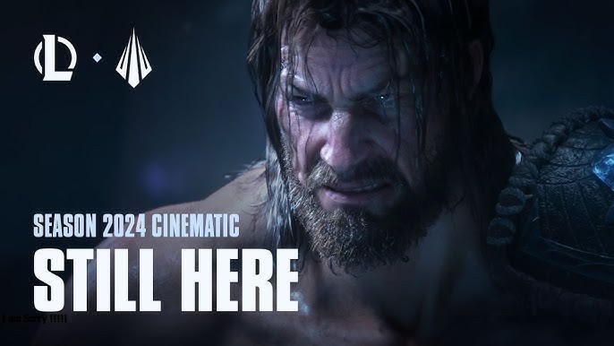

5 เกม MOBA น่าเล่น ปี 2024 บน PC
เกม MOBA ย่อมาจาก "Multiplayer Online Battle Arena" ซึ่งเป็นประเภทหนึ่งของเกมแข่งขันที่เล่นออนไลน์ที่มีผู้เล่นหลายคนร่วมทำการต่อสู้ในสนามรบใน เวลาเดียวกัน คำว่า "MOBA" นี้กลายเป็นชื่อที่ใช้กล่าวถึงเกมแนวนี้อย่างแพร่หลาย เกม MOBA มักจะมีลักษณะการเล่นที่ค่อนข้างคล้ายกัน โดยมักจะแบ่งผู้เล่นออกเป็นทีมสองฝ่ายหรือมากกว่า และเป้าหมายของทีมแต่ละฝ่ายคือการทำลายฐานหลักของฝ่ายตรงข้าม ในขณะที่ปกติแล้วมี ประการต่าง ๆ ที่ช่วยให้ผู้เล่นสามารถทำศึกษาและใช้ทรัพยากรต่าง ๆ ในการต่อสู้ การจัดกลุ่ม และการวางแผนทำให้เกิดการเล่นที่ยืดหยุ่นและเพลิดเพลินไปพร้อมกันเกม MOBA ได้รับความนิยมอย่างมากในช่วงปี 2010 และเป็นต้นมา
1.Dota2
"Dota 2" เป็นเกมแนว MOBA ที่ได้รับความนิยมและผลิตโดย Valve Corporation ซึ่งเกิดจากโมดเกม "Defense of the Ancients" (DotA) ที่สร้างบนแพลตฟอร์ม ของ Warcraft III โดยเกมนี้มีแนวทางกลยุทธ์และความซับซ้อนในการเรียนรู้และเล่น เนื่องจากมีตัวละคร (Heroes) จำนวนมากที่มีความสามารถและบทบาทที่แตกต่างกัน ผู้เล่นจะต้องทำงานร่วมกับทีมเพื่อทำลายฐานของฝ่ายตรงข้ามและคว้าชัยชนะ มีการแข่งขัน ที่มีรางวัลใหญ่ทั้งในระดับภูมิภาคและระดับโลกที่ดึงดูดผู้เล่นมาอย่างมาก ถือเป็นหนึ่งในเกม MOBA ที่มีชุมชนผู้เล่นที่ใหญ่ขนาดใหญ่และมีความนิยมอย่างมากในวงกว้างไปทั่วโลก
2.Leagues of Legends
"League of Legends" (LoL) เป็นเกมแนว MOBA ที่ได้รับความนิยมและถูกสร้างขึ้น โดยบริษัท Riot Games เกมนี้เป็นหนึ่งในเกม MOBA ที่ได้รับความนิยมมากที่สุดในโลก ในช่วงหลายปีที่ผ่านมาLoL เป็นเกมที่เล่นแบบทีมสองฝ่าย ที่มีการเลือกตัวละคร(Champion) และการต่อสู้ในสนามรบที่มีรูปแบบแผนที่ต่างกันไปในแต่ละการแข่งขัน ผู้เล่นจะสร้างกลยุทธ์และ ทำงานร่วมกับทีมเพื่อทำลายฐานหลัก (Nexus) ของฝ่ายตรงข้ามและคว้าชัยชนะในเกมLoL มีชุมชนผู้เล่นที่ใหญ่ขนาดใหญ่ทั่วโลก และมีการแข่งขันที่มีรางวัลมากมายทั้งในระดับภูมิภาคและระดับโลก ทำให้มีการแข่งขันอย่างเต็มที่และสนุกสนานตลอดเวลา นอกจากนี้ มีระบบการอัพเดตและการพัฒนาที่ต่อเนื่อง ในเกมเพื่อให้ผู้เล่นได้รับประสบการณ์ที่ดีและตื่นเต้นตลอดเวลาที่เล่น LoL อย่างมีความสนุกสุดเหวี่ยง
3.Heroes of the Storm
"Heroes of the Storm" (HotS) เป็นเกม MOBA ที่พัฒนาและเผยแพร่โดย Blizzard Entertainment เป็นเกมที่เน้นการรวมตัวละครจากเกมของ Blizzard ต่าง ๆ อย่าง "Warcraft", "StarCraft", "Diablo" และเกมอื่น ๆ ที่ทาง Blizzard เคยผลิตมาก่อนหน้านี้HotS มีเนื้อหาที่เชื่อมโยงกับภาพยนตร์และเกมต่าง ๆ ของ Blizzard และมุ่งเน้นให้ผู้เล่นสามารถเรียบเรียงทีมและใช้ตัวละครที่ชื่นชอบจากภาพยนตร์หรือเกมของ Blizzard ในการต่อสู้ในสนามรบ MOBA แบบพิเศษเกมมีระบบการเล่นที่มุ่งเน้นการทำงานร่วมกับทีมอย่างมีประสิทธิภาพ ทำให้ผู้เล่นต้องทำงานร่วมกันในการปรับตัวละครและกลยุทธ์เพื่อคว้าชัยชนะในสนามรบอย่างไรก็ตามในปี 2021 Blizzard ประกาศว่าจะลดการพัฒนาและการสนับสนุน HotS ลง ดังนั้น HotS อาจจะไม่ได้รับการอัพเดตหรือ การพัฒนาใหม่ต่อไปในระดับเดียวกันกับในอดีตแต่ก็ยังคงมีชุมชนของผู้เล่นที่ชื่นชอบและยังสามารถเข้าร่วมการแข่งขัน ในระดับสมรรถนะต่าง ๆ ได้ในชุมชนของเกมนี้
4.Smite
"Smite" เป็นเกม MOBA ที่พัฒนาและเผยแพร่โดย Hi-Rez Studios ซึ่งเป็นเกมที่มุ่งเน้นให้ผู้เล่นได้รับประสบการณ์ ในการเล่นแบบมุ่งหมายที่มุ่งเน้นไปที่แผนที่และตัวละครที่มาจากตำนานของเทพเจ้า และตำนานทางประวัติศาสตร์ต่าง ๆ จากทางที่แตกต่างจาก MOBA ทั่วไปที่มุ่งเน้นไปที่ธีมแฟนตาซีใน Smite, ผู้เล่นจะควบคุมตัวละครที่เรียกว่า "Gods" หรือเทพเจ้าจากตำนานต่าง ๆ และสามารถเล่นในมุมมองบุคคลที่สาม ทำให้การเคลื่อนไหวและการรบกวนจากฝ่ายตรงข้าม มีลักษณะที่หลากหลายและน่าสนุกเกมมีรูปแบบการเล่นหลากหลาย เช่น Conquest (โหมดแผนที่แบบหลัก), Arena (โหมดแผนที่แบบสูง), Assault (โหมดแผนที่แบบสุ่ม), และอื่น ๆ ทำให้มีความหลากหลายและความสนุกสนานในการ เล่นSmite ยังมีการอัพเดตตัวละครและเนื้อหาอย่างต่อเนื่อง เพื่อให้ผู้เล่นได้รับประสบการณ์ที่หลากหลายและตื่นเต้นในการเล่น อย่างต่อเนื่อง
5.Hyper Universe

"Hyper Universe" เป็นเกม MOBA ที่เน้นการต่อสู้และมีภาพกราฟิกแบบสตรีมไลน์ที่น่าสนใจ โดยเกมนี้เล่นได้บน PC ผ่านระบบปฏิบัติการ Windows เป็นเกมที่มีระบบการเล่นแบบ side-scrolling ที่มุ่งเน้นการต่อสู้และความสามารถพิเศษ ของตัวละครในสนามรบ โดยผู้เล่นสามารถควบคุมตัวละครที่มีความหลากหลายและมีคุณสมบัติที่แตกต่างกันเกมมีระบบการเล่น ที่เน้นการใช้สกิลและทักษะในการต่อสู้ โดยต้องการการวางแผนและความสามารถในการปรับตัวของตัวละครในการต่อสู้ในสนามรบ ซึ่งมีตัวละครหลากหลายที่มาพร้อมกับสไตล์และทักษะที่เฉพาะเจาะจงเกมนี้เป็นที่นิยมในเวลาหนึ่งแต่ในปัจจุบันอาจไม่มีการพัฒนา และการสนับสนุนอย่างต่อเนื่อง เนื่องจากการเปิดให้บริการได้ถูกระงับ ดังนั้นอาจจะมีความจำเป็นที่จะไม่สามารถเข้าเล่นได้ทั่วไป ตามปกติ แต่ก็ยังมีชุมชนผู้เล่นที่ชื่นชอบและยังคงเล่นเกมนี้ได้ในบางกรณี